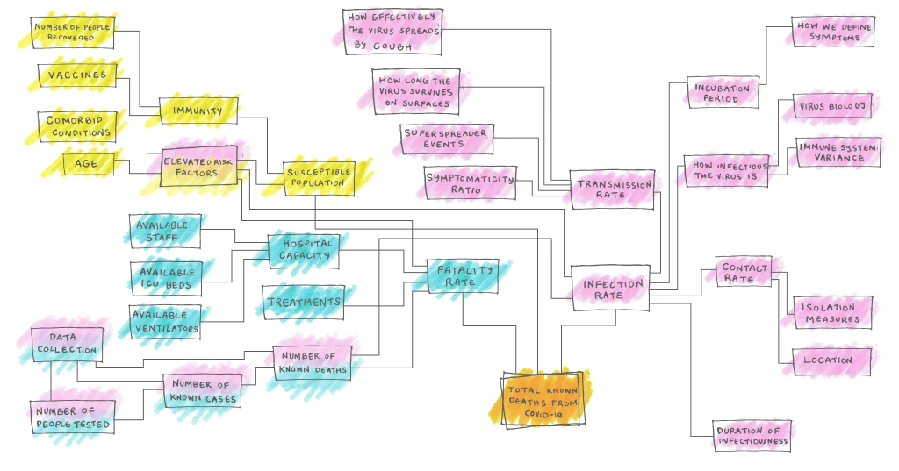
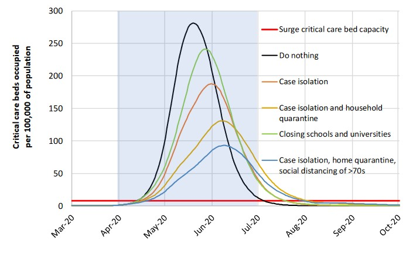

Please read this excellent article on why predicting COVID-19 is so hard.
Here is an image from that article that summarizes all the different factors that can play into any single model.

The following projection is from the Imperial College COVID-19 Response Team. It details the number of available beds vs multiple models of beds needed.

With each successive measure put in place, the delta between the number of beds needed and the number available decreases.
However, even with all measures put in place, the surge capacity of beds is still far lower then needed, with the demand for beds being almost an
order of magnitude higher then the supply.
Sources:
Flowchart
Bed Capacity